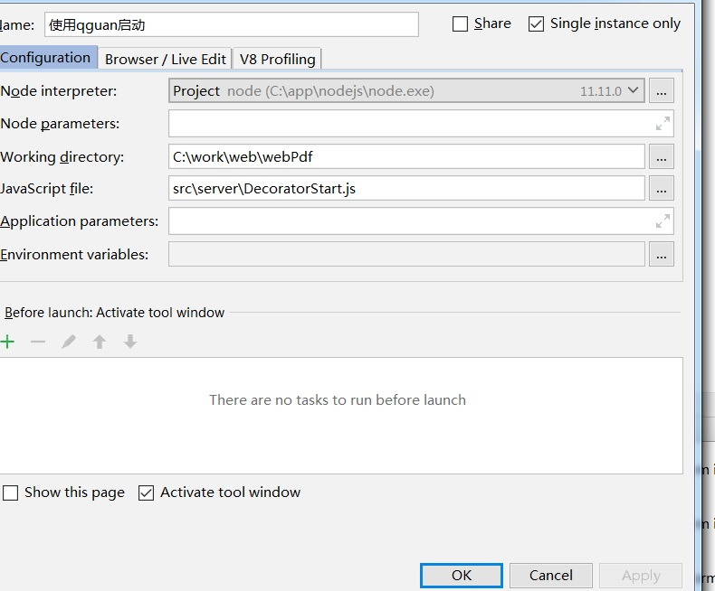

公司
文水佳捷通网络科技有限公司
官方网站 暂时没有先这代替
http://1110111011101110.com/
项目简介。
该项目既是一个springjs的demo,也是一个分销系统
相信该项目会给大家带来不少惊喜。
分销系统的核心。
| 一级 | 二级 | |
|---|---|---|
| 价格 | 20W | 10W |
| 一级提成 | 10W | 5W |
| 二级提成 | 5W | 2.5 |
| 维护费 | 2W | 1W |
注：
一级可以发展下线，二级不可以。
提成只是针对一级的。
为什么只有两级，这涉及到法律问题。 软件并不会对级别做限制。
启动
虽然，各种问题很多，但这样已经可以凑合启动了。
不能作为生产，但是学习已经够了。
